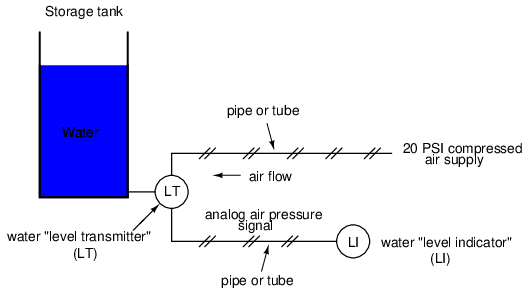
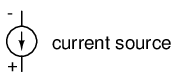

Instrumentation is a field of study and work centering on measurement and control of physical processes. These physical processes include pressure, temperature, flow rate, and chemical consistency. An instrument is a device that measures and/or acts to control any kind of physical process. Due to the fact that electrical quantities of voltage and current are easy to measure, manipulate, and transmit over long distances, they are widely used to represent such physical variables and transmit the information to remote locations.
A signal is any kind of physical quantity that conveys information. Audible speech is certainly a kind of signal, as it conveys the thoughts (information) of one person to another through the physical medium of sound. Hand gestures are signals, too, conveying information by means of light. This text is another kind of signal, interpreted by your English-trained mind as information about electric circuits. In this chapter, the word signal will be used primarily in reference to an electrical quantity of voltage or current that is used to represent or signify some other physical quantity.
An analog signal is a kind of signal that is continuously variable, as opposed to having a limited number of steps along its range (called digital). A well-known example of analog vs. digital is that of clocks: analog being the type with pointers that slowly rotate around a circular scale, and digital being the type with decimal number displays or a "second-hand" that jerks rather than smoothly rotates. The analog clock has no physical limit to how finely it can display the time, as its "hands" move in a smooth, pauseless fashion. The digital clock, on the other hand, cannot convey any unit of time smaller than what its display will allow for. The type of clock with a "second-hand" that jerks in 1-second intervals is a digital device with a minimum resolution of one second.
Both analog and digital signals find application in modern electronics, and the distinctions between these two basic forms of information is something to be covered in much greater detail later in this book. For now, I will limit the scope of this discussion to analog signals, since the systems using them tend to be of simpler design.
With many physical quantities, especially electrical, analog variability is easy to come by. If such a physical quantity is used as a signal medium, it will be able to represent variations of information with almost unlimited resolution.
In the early days of industrial instrumentation, compressed air was used as a signaling medium to convey information from measuring instruments to indicating and controlling devices located remotely. The amount of air pressure corresponded to the magnitude of whatever variable was being measured. Clean, dry air at approximately 20 pounds per square inch (PSI) was supplied from an air compressor through tubing to the measuring instrument and was then regulated by that instrument according to the quantity being measured to produce a corresponding output signal. For example, a pneumatic (air signal) level "transmitter" device set up to measure height of water (the "process variable") in a storage tank would output a low air pressure when the tank was empty, a medium pressure when the tank was partially full, and a high pressure when the tank was completely full.

The "water level indicator" (LI) is nothing more than a pressure gauge measuring the air pressure in the pneumatic signal line. This air pressure, being a signal, is in turn a representation of the water level in the tank. Any variation of level in the tank can be represented by an appropriate variation in the pressure of the pneumatic signal. Aside from certain practical limits imposed by the mechanics of air pressure devices, this pneumatic signal is infinitely variable, able to represent any degree of change in the water's level, and is therefore analog in the truest sense of the word.
Crude as it may appear, this kind of pneumatic signaling system formed the backbone of many industrial measurement and control systems around the world, and still sees use today due to its simplicity, safety, and reliability. Air pressure signals are easily transmitted through inexpensive tubes, easily measured (with mechanical pressure gauges), and are easily manipulated by mechanical devices using bellows, diaphragms, valves, and other pneumatic devices. Air pressure signals are not only useful for measuring physical processes, but for controlling them as well. With a large enough piston or diaphragm, a small air pressure signal can be used to generate a large mechanical force, which can be used to move a valve or other controlling device. Complete automatic control systems have been made using air pressure as the signal medium. They are simple, reliable, and relatively easy to understand. However, the practical limits for air pressure signal accuracy can be too limiting in some cases, especially when the compressed air is not clean and dry, and when the possibility for tubing leaks exist.
With the advent of solid-state electronic amplifiers and other technological advances, electrical quantities of voltage and current became practical for use as analog instrument signaling media. Instead of using pneumatic pressure signals to relay information about the fullness of a water storage tank, electrical signals could relay that same information over thin wires (instead of tubing) and not require the support of such expensive equipment as air compressors to operate:
Analog electronic signals are still the primary kinds of signals used in the instrumentation world today (January of 2001), but it is giving way to digital modes of communication in many applications (more on that subject later). Despite changes in technology, it is always good to have a thorough understanding of fundamental principles, so the following information will never really become obsolete.
One important concept applied in many analog instrumentation signal systems is that of "live zero," a standard way of scaling a signal so that an indication of 0 percent can be discriminated from the status of a "dead" system. Take the pneumatic signal system as an example: if the signal pressure range for transmitter and indicator was designed to be 0 to 12 PSI, with 0 PSI representing 0 percent of process measurement and 12 PSI representing 100 percent, a received signal of 0 percent could be a legitimate reading of 0 percent measurement or it could mean that the system was malfunctioning (air compressor stopped, tubing broken, transmitter malfunctioning, etc.). With the 0 percent point represented by 0 PSI, there would be no easy way to distinguish one from the other.
If, however, we were to scale the instruments (transmitter and indicator) to use a scale of 3 to 15 PSI, with 3 PSI representing 0 percent and 15 PSI representing 100 percent, any kind of a malfunction resulting in zero air pressure at the indicator would generate a reading of -25 percent (0 PSI), which is clearly a faulty value. The person looking at the indicator would then be able to immediately tell that something was wrong.
Not all signal standards have been set up with live zero baselines, but the more robust signals standards (3-15 PSI, 4-20 mA) have, and for good reason.
The use of variable voltage for instrumentation signals seems a rather obvious option to explore. Let's see how a voltage signal instrument might be used to measure and relay information about water tank level:
The "transmitter" in this diagram contains its own precision regulated source of voltage, and the potentiometer setting is varied by the motion of a float inside the water tank following the water level. The "indicator" is nothing more than a voltmeter with a scale calibrated to read in some unit height of water (inches, feet, meters) instead of volts.
As the water tank level changes, the float will move. As the float moves, the potentiometer wiper will correspondingly be moved, dividing a different proportion of the battery voltage to go across the two-conductor cable and on to the level indicator. As a result, the voltage received by the indicator will be representative of the level of water in the storage tank.
This elementary transmitter/indicator system is reliable and easy to understand, but it has its limitations. Perhaps greatest is the fact that the system accuracy can be influenced by excessive cable resistance. Remember that real voltmeters draw small amounts of current, even though it is ideal for a voltmeter not to draw any current at all. This being the case, especially for the kind of heavy, rugged analog meter movement likely used for an industrial-quality system, there will be a small amount of current through the 2-conductor cable wires. The cable, having a small amount of resistance along its length, will consequently drop a small amount of voltage, leaving less voltage across the indicator's leads than what is across the leads of the transmitter. This loss of voltage, however small, constitutes an error in measurement:
Resistor symbols have been added to the wires of the cable to show what is happening in a real system. Bear in mind that these resistances can be minimized with heavy-gauge wire (at additional expense) and/or their effects mitigated through the use of a high-resistance (null-balance?) voltmeter for an indicator (at additional complexity).
Despite this inherent disadvantage, voltage signals are still used in many applications because of their extreme design simplicity. One common signal standard is 0-10 volts, meaning that a signal of 0 volts represents 0 percent of measurement, 10 volts represents 100 percent of measurement, 5 volts represents 50 percent of measurement, and so on. Instruments designed to output and/or accept this standard signal range are available for purchase from major manufacturers. A more common voltage range is 1-5 volts, which makes use of the "live zero" concept for circuit fault indication.
It is possible through the use of electronic amplifiers to design a circuit outputting a constant amount of current rather than a constant amount of voltage. This collection of components is collectively known as a current source, and its symbol looks like this:

A current source generates as much or as little voltage as needed across its leads to produce a constant amount of current through it. This is just the opposite of a voltage source (an ideal battery), which will output as much or as little current as demanded by the external circuit in maintaining its output voltage constant. Following the "conventional flow" symbology typical of electronic devices, the arrow points against the direction of electron motion. Apologies for this confusing notation: another legacy of Benjamin Franklin's false assumption of electron flow!
Current sources can be built as variable devices, just like voltage sources, and they can be designed to produce very precise amounts of current. If a transmitter device were to be constructed with a variable current source instead of a variable voltage source, we could design an instrumentation signal system based on current instead of voltage:
The internal workings of the transmitter's current source need not be a concern at this point, only the fact that its output varies in response to changes in the float position, just like the potentiometer setup in the voltage signal system varied voltage output according to float position.
Notice now how the indicator is an ammeter rather than a voltmeter (the scale calibrated in inches, feet, or meters of water in the tank, as always). Because the circuit is a series configuration (accounting for the cable resistances), current will be precisely equal through all components. With or without cable resistance, the current at the indicator is exactly the same as the current at the transmitter, and therefore there is no error incurred as there might be with a voltage signal system. This assurance of zero signal degradation is a decided advantage of current signal systems over voltage signal systems.
The most common current signal standard in modern use is the 4 to 20 milliamp (4-20 mA) loop, with 4 milliamps representing 0 percent of measurement, 20 milliamps representing 100 percent, 12 milliamps representing 50 percent, and so on. A convenient feature of the 4-20 mA standard is its ease of signal conversion to 1-5 volt indicating instruments. A simple 250 ohm precision resistor connected in series with the circuit will produce 1 volt of drop at 4 milliamps, 5 volts of drop at 20 milliamps, etc:
---------------------------------------- | Percent of | 4-20 mA | 1-5 V | | measurement | signal | signal | ---------------------------------------- | 0 | 4.0 mA | 1.0 V | ---------------------------------------- | 10 | 5.6 mA | 1.4 V | ---------------------------------------- | 20 | 7.2 mA | 1.8 V | ---------------------------------------- | 25 | 8.0 mA | 2.0 V | ---------------------------------------- | 30 | 8.8 mA | 2.2 V | ---------------------------------------- | 40 | 10.4 mA | 2.6 V | ---------------------------------------- | 50 | 12.0 mA | 3.0 V | ---------------------------------------- | 60 | 13.6 mA | 3.4 V | ---------------------------------------- | 70 | 15.2 mA | 3.8 V | ---------------------------------------- | 75 | 16.0 mA | 4.0 V | --------------------------------------- | 80 | 16.8 mA | 4.2 V | ---------------------------------------- | 90 | 18.4 mA | 4.6 V | ---------------------------------------- | 100 | 20.0 mA | 5.0 V | ----------------------------------------
The current loop scale of 4-20 milliamps has not always been the standard for current instruments: for a while there was also a 10-50 milliamp standard, but that standard has since been obsoleted. One reason for the eventual supremacy of the 4-20 milliamp loop was safety: with lower circuit voltages and lower current levels than in 10-50 mA system designs, there was less chance for personal shock injury and/or the generation of sparks capable of igniting flammable atmospheres in certain industrial environments.
An electromechanical generator is a device capable of producing electrical power from mechanical energy, usually the turning of a shaft. When not connected to a load resistance, generators will generate voltage roughly proportional to shaft speed. With precise construction and design, generators can be built to produce very precise voltages for certain ranges of shaft speeds, thus making them well-suited as measurement devices for shaft speed in mechanical equipment. A generator specially designed and constructed for this use is called a tachometer or tachogenerator. Often, the word "tach" (pronounced "tack") is used rather than the whole word.
By measuring the voltage produced by a tachogenerator, you can easily determine the rotational speed of whatever its mechanically attached to. One of the more common voltage signal ranges used with tachogenerators is 0 to 10 volts. Obviously, since a tachogenerator cannot produce voltage when its not turning, the zero cannot be "live" in this signal standard. Tachogenerators can be purchased with different "full-scale" (10 volt) speeds for different applications. Although a voltage divider could theoretically be used with a tachogenerator to extend the measurable speed range in the 0-10 volt scale, it is not advisable to significantly overspeed a precision instrument like this, or its life will be shortened.
Tachogenerators can also indicate the direction of rotation by the polarity of the output voltage. When a permanent-magnet style DC generator's rotational direction is reversed, the polarity of its output voltage will switch. In measurement and control systems where directional indication is needed, tachogenerators provide an easy way to determine that.
Tachogenerators are frequently used to measure the speeds of electric motors, engines, and the equipment they power: conveyor belts, machine tools, mixers, fans, etc.
An interesting phenomenon applied in the field of instrumentation is the Seebeck effect, which is the production of a small voltage across the length of a wire due to a difference in temperature along that wire. This effect is most easily observed and applied with a junction of two dissimilar metals in contact, each metal producing a different Seebeck voltage along its length, which translates to a voltage between the two (unjoined) wire ends. Most any pair of dissimilar metals will produce a measurable voltage when their junction is heated, some combinations of metals producing more voltage per degree of temperature than others:
The Seebeck effect is fairly linear; that is, the voltage produced by a heated junction of two wires is directly proportional to the temperature. This means that the temperature of the metal wire junction can be determined by measuring the voltage produced. Thus, the Seebeck effect provides for us an electric method of temperature measurement.
When a pair of dissimilar metals are joined together for the purpose of measuring temperature, the device formed is called a thermocouple. Thermocouples made for instrumentation use metals of high purity for an accurate temperature/voltage relationship (as linear and as predictable as possible).
Seebeck voltages are quite small, in the tens of millivolts for most temperature ranges. This makes them somewhat difficult to measure accurately. Also, the fact that any junction between dissimilar metals will produce temperature-dependent voltage creates a problem when we try to connect the thermocouple to a voltmeter, completing a circuit:
The second iron/copper junction formed by the connection between the thermocouple and the meter on the top wire will produce a temperature-dependent voltage opposed in polarity to the voltage produced at the measurement junction. This means that the voltage between the voltmeter's copper leads will be a function of the difference in temperature between the two junctions, and not the temperature at the measurement junction alone. Even for thermocouple types where copper is not one of the dissimilar metals, the combination of the two metals joining the copper leads of the measuring instrument forms a junction equivalent to the measurement junction:
This second junction is called the reference or cold junction, to distinguish it from the junction at the measuring end, and there is no way to avoid having one in a thermocouple circuit. In some applications, a differential temperature measurement between two points is required, and this inherent property of thermocouples can be exploited to make a very simple measurement system.
However, in most applications the intent is to measure temperature at a single point only, and in these cases the second junction becomes a liability to function.
Compensation for the voltage generated by the reference junction is typically performed by a special circuit designed to measure temperature there and produce a corresponding voltage to counter the reference junction's effects. At this point you may wonder, "If we have to resort to some other form of temperature measurement just to overcome an idiosyncrasy with thermocouples, then why bother using thermocouples to measure temperature at all? Why not just use this other form of temperature measurement, whatever it may be, to do the job?" The answer is this: because the other forms of temperature measurement used for reference junction compensation are not as robust or versatile as a thermocouple junction, but do the job of measuring room temperature at the reference junction site quite well. For example, the thermocouple measurement junction may be inserted into the 1800 degree (F) flue of a foundry holding furnace, while the reference junction sits a hundred feet away in a metal cabinet at ambient temperature, having its temperature measured by a device that could never survive the heat or corrosive atmosphere of the furnace.
The voltage produced by thermocouple junctions is strictly dependent upon temperature. Any current in a thermocouple circuit is a function of circuit resistance in opposition to this voltage (I=E/R). In other words, the relationship between temperature and Seebeck voltage is fixed, while the relationship between temperature and current is variable, depending on the total resistance of the circuit. With heavy enough thermocouple conductors, currents upwards of hundreds of amps can be generated from a single pair of thermocouple junctions! (I've actually seen this in a laboratory experiment, using heavy bars of copper and copper/nickel alloy to form the junctions and the circuit conductors.)
For measurement purposes, the voltmeter used in a thermocouple circuit is designed to have a very high resistance so as to avoid any error-inducing voltage drops along the thermocouple wire. The problem of voltage drop along the conductor length is even more severe here than with the DC voltage signals discussed earlier, because here we only have a few millivolts of voltage produced by the junction. We simply cannot afford to have even a single millivolt of drop along the conductor lengths without incurring serious temperature measurement errors.
Ideally, then, current in a thermocouple circuit is zero. Early thermocouple indicating instruments made use of null-balance potentiometric voltage measurement circuitry to measure the junction voltage. The early Leeds & Northrup "Speedomax" line of temperature indicator/recorders were a good example of this technology. More modern instruments use semiconductor amplifier circuits to allow the thermocouple's voltage signal to drive an indication device with little or no current drawn in the circuit.
Thermocouples, however, can be built from heavy-gauge wire for low resistance, and connected in such a way so as to generate very high currents for purposes other than temperature measurement. One such purpose is electric power generation. By connecting many thermocouples in series, alternating hot/cold temperatures with each junction, a device called a thermopile can be constructed to produce substantial amounts of voltage and current:
With the left and right sets of junctions at the same temperature, the voltage at each junction will be equal and the opposing polarities would cancel to a final voltage of zero. However, if the left set of junctions were heated and the right set cooled, the voltage at each left junction would be greater than each right junction, resulting in a total output voltage equal to the sum of all junction pair differentials. In a thermopile, this is exactly how things are set up. A source of heat (combustion, strong radioactive substance, solar heat, etc.) is applied to one set of junctions, while the other set is bonded to a heat sink of some sort (air- or water-cooled). Interestingly enough, as electrons flow through an external load circuit connected to the thermopile, heat energy is transferred from the hot junctions to the cold junctions, demonstrating another thermo-electric phenomenon: the so-called Peltier Effect (electric current transferring heat energy).
Another application for thermocouples is in the measurement of average temperature between several locations. The easiest way to do this is to connect several thermocouples in parallel with each other. The millivolt signal produced by each thermocouple will average out at the parallel junction point. The voltage differences between the junctions drop along the resistances of the thermocouple wires:
Unfortunately, though, the accurate averaging of these Seebeck voltage potentials relies on each thermocouple's wire resistances being equal. If the thermocouples are located at different places and their wires join in parallel at a single location, equal wire length will be unlikely. The thermocouple having the greatest wire length from point of measurement to parallel connection point will tend to have the greatest resistance, and will therefore have the least effect on the average voltage produced.
To help compensate for this, additional resistance can be added to each of the parallel thermocouple circuit branches to make their respective resistances more equal. Without custom-sizing resistors for each branch (to make resistances precisely equal between all the thermocouples), it is acceptable to simply install resistors with equal values, significantly higher than the thermocouple wires' resistances so that those wire resistances will have a much smaller impact on the total branch resistance. These resistors are called swamping resistors, because their relatively high values overshadow or "swamp" the resistances of the thermocouple wires themselves:
Because thermocouple junctions produce such low voltages, it is imperative that wire connections be very clean and tight for accurate and reliable operation. Also, the location of the reference junction (the place where the dissimilar-metal thermocouple wires join to standard copper) must be kept close to the measuring instrument, to ensure that the instrument can accurately compensate for reference junction temperature. Despite these seemingly restrictive requirements, thermocouples remain one of the most robust and popular methods of industrial temperature measurement in modern use.
A very important measurement in many liquid chemical processes (industrial, pharmaceutical, manufacturing, food production, etc.) is that of pH: the measurement of hydrogen ion concentration in a liquid solution. A solution with a low pH value is called an "acid," while one with a high pH is called a "caustic." The common pH scale extends from 0 (strong acid) to 14 (strong caustic), with 7 in the middle representing pure water (neutral):
pH is defined as follows: the lower-case letter "p" in pH stands for the negative common (base ten) logarithm, while the upper-case letter "H" stands for the element hydrogen. Thus, pH is a logarithmic measurement of the number of moles of hydrogen ions (H+) per liter of solution. Incidentally, the "p" prefix is also used with other types of chemical measurements where a logarithmic scale is desired, pCO2 (Carbon Dioxide) and pO2 (Oxygen) being two such examples.
The logarithmic pH scale works like this: a solution with 10-12 moles of H+ ions per liter has a pH of 12; a solution with 10-3 moles of H+ ions per liter has a pH of 3. While very uncommon, there is such a thing as an acid with a pH measurement below 0 and a caustic with a pH above 14. Such solutions, understandably, are quite concentrated and extremely reactive.
While pH can be measured by color changes in certain chemical powders (the "litmus strip" being a familiar example from high school chemistry classes), continuous process monitoring and control of pH requires a more sophisticated approach. The most common approach is the use of a specially-prepared electrode designed to allow hydrogen ions in the solution to migrate through a selective barrier, producing a measurable potential (voltage) difference proportional to the solution's pH:
The design and operational theory of pH electrodes is a very complex subject, explored only briefly here. What is important to understand is that these two electrodes generate a voltage directly proportional to the pH of the solution. At a pH of 7 (neutral), the electrodes will produce 0 volts between them. At a low pH (acid) a voltage will be developed of one polarity, and at a high pH (caustic) a voltage will be developed of the opposite polarity.
An unfortunate design constraint of pH electrodes is that one of them (called the measurement electrode) must be constructed of special glass to create the ion-selective barrier needed to screen out hydrogen ions from all the other ions floating around in the solution. This glass is chemically doped with lithium ions, which is what makes it react electrochemically to hydrogen ions. Of course, glass is not exactly what you would call a "conductor;" rather, it is an extremely good insulator. This presents a major problem if our intent is to measure voltage between the two electrodes. The circuit path from one electrode contact, through the glass barrier, through the solution, to the other electrode, and back through the other electrode's contact, is one of extremely high resistance.
The other electrode (called the reference electrode) is made from a chemical solution of neutral (7) pH buffer solution (usually potassium chloride) allowed to exchange ions with the process solution through a porous separator, forming a relatively low resistance connection to the test liquid. At first, one might be inclined to ask: why not just dip a metal wire into the solution to get an electrical connection to the liquid? The reason this will not work is because metals tend to be highly reactive in ionic solutions and can produce a significant voltage across the interface of metal-to-liquid contact. The use of a wet chemical interface with the measured solution is necessary to avoid creating such a voltage, which of course would be falsely interpreted by any measuring device as being indicative of pH.
Here is an illustration of the measurement electrode's construction. Note the thin, lithium-doped glass membrane across which the pH voltage is generated:
Here is an illustration of the reference electrode's construction. The porous junction shown at the bottom of the electrode is where the potassium chloride buffer and process liquid interface with each other:
The measurement electrode's purpose is to generate the voltage used to measure the solution's pH. This voltage appears across the thickness of the glass, placing the silver wire on one side of the voltage and the liquid solution on the other. The reference electrode's purpose is to provide the stable, zero-voltage connection to the liquid solution so that a complete circuit can be made to measure the glass electrode's voltage. While the reference electrode's connection to the test liquid may only be a few kilo-ohms, the glass electrode's resistance may range from ten to nine hundred mega-ohms, depending on electrode design! Being that any current in this circuit must travel through both electrodes' resistances (and the resistance presented by the test liquid itself), these resistances are in series with each other and therefore add to make an even greater total.
An ordinary analog or even digital voltmeter has much too low of an internal resistance to measure voltage in such a high-resistance circuit. The equivalent circuit diagram of a typical pH probe circuit illustrates the problem:
Even a very small circuit current traveling through the high resistances of each component in the circuit (especially the measurement electrode's glass membrane), will produce relatively substantial voltage drops across those resistances, seriously reducing the voltage seen by the meter. Making matters worse is the fact that the voltage differential generated by the measurement electrode is very small, in the millivolt range (ideally 59.16 millivolts per pH unit at room temperature). The meter used for this task must be very sensitive and have an extremely high input resistance.
The most common solution to this measurement problem is to use an amplified meter with an extremely high internal resistance to measure the electrode voltage, so as to draw as little current through the circuit as possible. With modern semiconductor components, a voltmeter with an input resistance of up to 1017 Ω can be built with little difficulty. Another approach, seldom seen in contemporary use, is to use a potentiometric "null-balance" voltage measurement setup to measure this voltage without drawing any current from the circuit under test. If a technician desired to check the voltage output between a pair of pH electrodes, this would probably be the most practical means of doing so using only standard benchtop metering equipment:
As usual, the precision voltage supply would be adjusted by the technician until the null detector registered zero, then the voltmeter connected in parallel with the supply would be viewed to obtain a voltage reading. With the detector "nulled" (registering exactly zero), there should be zero current in the pH electrode circuit, and therefore no voltage dropped across the resistances of either electrode, giving the real electrode voltage at the voltmeter terminals.
Wiring requirements for pH electrodes tend to be even more severe than thermocouple wiring, demanding very clean connections and short distances of wire (10 yards or less, even with gold-plated contacts and shielded cable) for accurate and reliable measurement. As with thermocouples, however, the disadvantages of electrode pH measurement are offset by the advantages: good accuracy and relative technical simplicity.
Few instrumentation technologies inspire the awe and mystique commanded by pH measurement, because it is so widely misunderstood and difficult to troubleshoot. Without elaborating on the exact chemistry of pH measurement, a few words of wisdom can be given here about pH measurement systems:
Advances are still being made in the field of pH measurement, some of which hold great promise for overcoming traditional limitations of pH electrodes. One such technology uses a device called a field-effect transistor to electrostatically measure the voltage produced by an ion-permeable membrane rather than measure the voltage with an actual voltmeter circuit. While this technology harbors limitations of its own, it is at least a pioneering concept, and may prove more practical at a later date.
If a strip of conductive metal is stretched, it will become skinnier and longer, both changes resulting in an increase of electrical resistance end-to-end. Conversely, if a strip of conductive metal is placed under compressive force (without buckling), it will broaden and shorten. If these stresses are kept within the elastic limit of the metal strip (so that the strip does not permanently deform), the strip can be used as a measuring element for physical force, the amount of applied force inferred from measuring its resistance.
Such a device is called a strain gauge. Strain gauges are frequently used in mechanical engineering research and development to measure the stresses generated by machinery. Aircraft component testing is one area of application, tiny strain-gauge strips glued to structural members, linkages, and any other critical component of an airframe to measure stress. Most strain gauges are smaller than a postage stamp, and they look something like this:
A strain gauge's conductors are very thin: if made of round wire, about 1/1000 inch in diameter. Alternatively, strain gauge conductors may be thin strips of metallic film deposited on a nonconducting substrate material called the carrier. The latter form of strain gauge is represented in the previous illustration. The name "bonded gauge" is given to strain gauges that are glued to a larger structure under stress (called the test specimen). The task of bonding strain gauges to test specimens may appear to be very simple, but it is not. "Gauging" is a craft in its own right, absolutely essential for obtaining accurate, stable strain measurements. It is also possible to use an unmounted gauge wire stretched between two mechanical points to measure tension, but this technique has its limitations.
Typical strain gauge resistances range from 30 Ω to 3 kΩ (unstressed). This resistance may change only a fraction of a percent for the full force range of the gauge, given the limitations imposed by the elastic limits of the gauge material and of the test specimen. Forces great enough to induce greater resistance changes would permanently deform the test specimen and/or the gauge conductors themselves, thus ruining the gauge as a measurement device. Thus, in order to use the strain gauge as a practical instrument, we must measure extremely small changes in resistance with high accuracy.
Such demanding precision calls for a bridge measurement circuit. Unlike the Wheatstone bridge shown in the last chapter using a null-balance detector and a human operator to maintain a state of balance, a strain gauge bridge circuit indicates measured strain by the degree of imbalance, and uses a precision voltmeter in the center of the bridge to provide an accurate measurement of that imbalance:
Typically, the rheostat arm of the bridge (R2 in the diagram) is set at a value equal to the strain gauge resistance with no force applied. The two ratio arms of the bridge (R1 and R3) are set equal to each other. Thus, with no force applied to the strain gauge, the bridge will be symmetrically balanced and the voltmeter will indicate zero volts, representing zero force on the strain gauge. As the strain gauge is either compressed or tensed, its resistance will decrease or increase, respectively, thus unbalancing the bridge and producing an indication at the voltmeter. This arrangement, with a single element of the bridge changing resistance in response to the measured variable (mechanical force), is known as a quarter-bridge circuit.
As the distance between the strain gauge and the three other resistances in the bridge circuit may be substantial, wire resistance has a significant impact on the operation of the circuit. To illustrate the effects of wire resistance, I'll show the same schematic diagram, but add two resistor symbols in series with the strain gauge to represent the wires:
The strain gauge's resistance (Rgauge) is not the only resistance being measured: the wire resistances Rwire1 and Rwire2, being in series with Rgauge, also contribute to the resistance of the lower half of the rheostat arm of the bridge, and consequently contribute to the voltmeter's indication. This, of course, will be falsely interpreted by the meter as physical strain on the gauge.
While this effect cannot be completely eliminated in this configuration, it can be minimized with the addition of a third wire, connecting the right side of the voltmeter directly to the upper wire of the strain gauge:
Because the third wire carries practically no current (due to the voltmeter's extremely high internal resistance), its resistance will not drop any substantial amount of voltage. Notice how the resistance of the top wire (Rwire1) has been "bypassed" now that the voltmeter connects directly to the top terminal of the strain gauge, leaving only the lower wire's resistance (Rwire2) to contribute any stray resistance in series with the gauge. Not a perfect solution, of course, but twice as good as the last circuit!
There is a way, however, to reduce wire resistance error far beyond the method just described, and also help mitigate another kind of measurement error due to temperature. An unfortunate characteristic of strain gauges is that of resistance change with changes in temperature. This is a property common to all conductors, some more than others. Thus, our quarter-bridge circuit as shown (either with two or with three wires connecting the gauge to the bridge) works as a thermometer just as well as it does a strain indicator. If all we want to do is measure strain, this is not good. We can transcend this problem, however, by using a "dummy" strain gauge in place of R2, so that both elements of the rheostat arm will change resistance in the same proportion when temperature changes, thus canceling the effects of temperature change:
Resistors R1 and R3 are of equal resistance value, and the strain gauges are identical to one another. With no applied force, the bridge should be in a perfectly balanced condition and the voltmeter should register 0 volts. Both gauges are bonded to the same test specimen, but only one is placed in a position and orientation so as to be exposed to physical strain (the active gauge). The other gauge is isolated from all mechanical stress, and acts merely as a temperature compensation device (the "dummy" gauge). If the temperature changes, both gauge resistances will change by the same percentage, and the bridge's state of balance will remain unaffected. Only a differential resistance (difference of resistance between the two strain gauges) produced by physical force on the test specimen can alter the balance of the bridge.
Wire resistance doesn't impact the accuracy of the circuit as much as before, because the wires connecting both strain gauges to the bridge are approximately equal length. Therefore, the upper and lower sections of the bridge's rheostat arm contain approximately the same amount of stray resistance, and their effects tend to cancel:
Even though there are now two strain gauges in the bridge circuit, only one is responsive to mechanical strain, and thus we would still refer to this arrangement as a quarter-bridge. However, if we were to take the upper strain gauge and position it so that it is exposed to the opposite force as the lower gauge (i.e. when the upper gauge is compressed, the lower gauge will be stretched, and vice versa), we will have both gauges responding to strain, and the bridge will be more responsive to applied force. This utilization is known as a half-bridge. Since both strain gauges will either increase or decrease resistance by the same proportion in response to changes in temperature, the effects of temperature change remain canceled and the circuit will suffer minimal temperature-induced measurement error:
An example of how a pair of strain gauges may be bonded to a test specimen so as to yield this effect is illustrated here:
With no force applied to the test specimen, both strain gauges have equal resistance and the bridge circuit is balanced. However, when a downward force is applied to the free end of the specimen, it will bend downward, stretching gauge #1 and compressing gauge #2 at the same time:
In applications where such complementary pairs of strain gauges can be bonded to the test specimen, it may be advantageous to make all four elements of the bridge "active" for even greater sensitivity. This is called a full-bridge circuit:

Both half-bridge and full-bridge configurations grant greater sensitivity over the quarter-bridge circuit, but often it is not possible to bond complementary pairs of strain gauges to the test specimen. Thus, the quarter-bridge circuit is frequently used in strain measurement systems.
When possible, the full-bridge configuration is the best to use. This is true not only because it is more sensitive than the others, but because it is linear while the others are not. Quarter-bridge and half-bridge circuits provide an output (imbalance) signal that is only approximately proportional to applied strain gauge force. Linearity, or proportionality, of these bridge circuits is best when the amount of resistance change due to applied force is very small compared to the nominal resistance of the gauge(s). With a full-bridge, however, the output voltage is directly proportional to applied force, with no approximation (provided that the change in resistance caused by the applied force is equal for all four strain gauges!).
Unlike the Wheatstone and Kelvin bridges, which provide measurement at a condition of perfect balance and therefore function irrespective of source voltage, the amount of source (or "excitation") voltage matters in an unbalanced bridge like this. Therefore, strain gauge bridges are rated in millivolts of imbalance produced per volt of excitation, per unit measure of force. A typical example for a strain gauge of the type used for measuring force in industrial environments is 15 mV/V at 1000 pounds. That is, at exactly 1000 pounds applied force (either compressive or tensile), the bridge will be unbalanced by 15 millivolts for every volt of excitation voltage. Again, such a figure is precise if the bridge circuit is full-active (four active strain gauges, one in each arm of the bridge), but only approximate for half-bridge and quarter-bridge arrangements.
Strain gauges may be purchased as complete units, with both strain gauge elements and bridge resistors in one housing, sealed and encapsulated for protection from the elements, and equipped with mechanical fastening points for attachment to a machine or structure. Such a package is typically called a load cell.
Like many of the other topics addressed in this chapter, strain gauge systems can become quite complex, and a full dissertation on strain gauges would be beyond the scope of this book.
Contributors to this chapter are listed in chronological order of their contributions, from most recent to first. See Appendix 2 (Contributor List) for dates and contact information.
Jason Starck (June 2000): HTML document formatting, which led to a much better-looking second edition.
Lessons In Electric Circuits copyright (C) 2000-2023 Tony R. Kuphaldt, under the terms and conditions of the CC BY License.